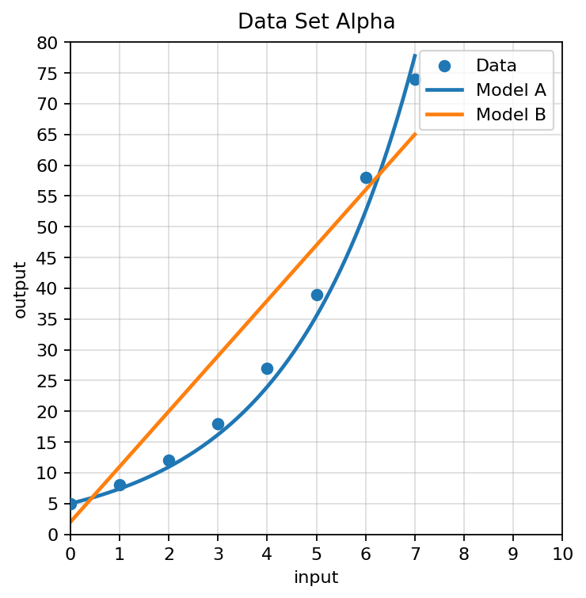
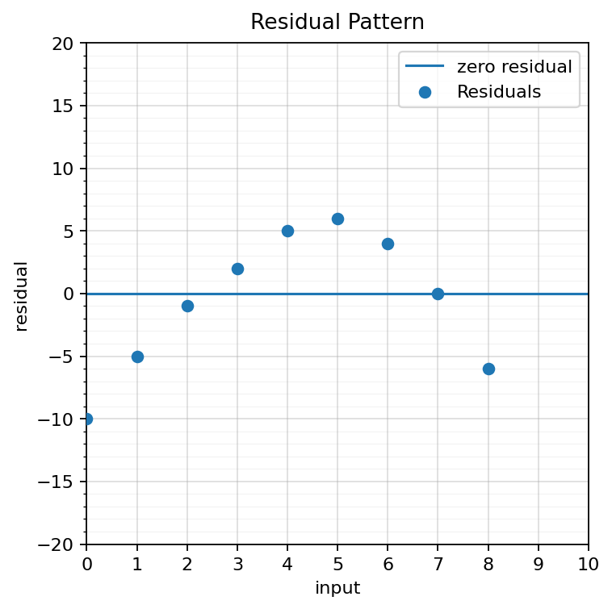

Check Your Understanding 8.1
Algebra 1 Practice Package
Spiral Plan and DoK Balance
Current Focus
Unit 8.1: Selecting Appropriate Models
8 focused current-section questions
Unit 8.1: Selecting Appropriate Models
8 focused current-section questions
Main Spiral
Unit 7.1: Recognizing Growth and Decay
Not used in CYU
Unit 7.1: Recognizing Growth and Decay
Not used in CYU
Earlier Readiness
Unit 6.1: Solving Quadratics by Factoring
Not used in CYU
Unit 6.1: Solving Quadratics by Factoring
Not used in CYU
Check Your Understanding: This is a section-aligned spiral: 8.1 with 7.1 and 6.1. It is not a previous-section spiral.
1.
A table has outputs $4, 7, 10, 13$ for consecutive inputs. Choose a likely model family and give evidence.
2.
A context says a quantity is multiplied by $1.2$ each year. Choose a likely model family.
3.
Use Data Set Gamma. Choose the more reasonable model and cite one feature of the data.
4.
Use Data Set Alpha. Explain why Model A may be more reasonable than Model B for the displayed data.

5.
Match each clue to a likely family: equal differences, repeated multiplication, turning point, distance from a target.
6.
A student chooses a linear model because the data increases. Write a critique using rate of change or multiplier evidence.
7.
Use the residual plot. Explain what the pattern suggests about the model being used.

8.
A model works well for the first $10$ days of data. Explain two things to check before using it to predict day $100$.